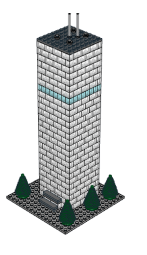
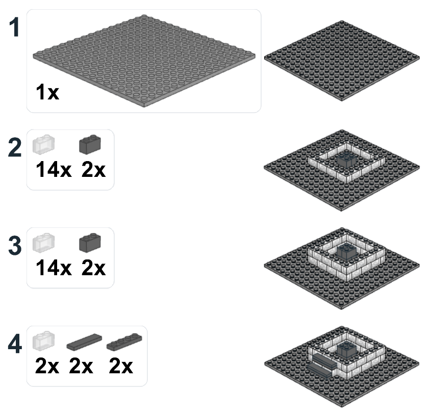
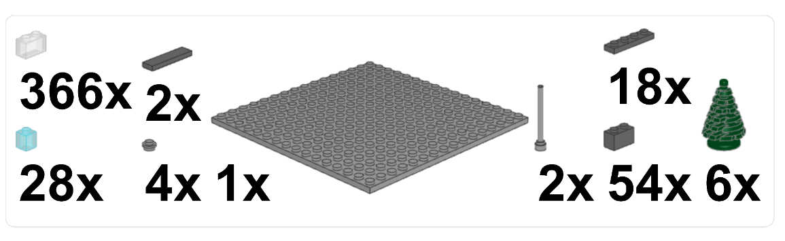

LEGO®-Modell · O2 Tower München
Ein kleiner Tower für viele gemeinsame Erinnerungen.
481 LEGO®-Teile, 27 Turmlagen und eine Grundfläche von 8 × 8 Noppen – als gemeinsames Erinnerungsstück zum Selberbauen.
481Teile
27Turmlagen
8 × 8Noppen
20Blaue Lage

O2 Tower München
Das Modell
Vom Sockel bis zum Dach – klar in sechs Abschnitten.
Die langen, sich wiederholenden Turmlagen sind bewusst zusammengefasst. So bleibt die Anleitung kompakt, ohne die besonderen Schritte zu verlieren.
01
Grundaufbau
Grundplatte, erste Turmlagen und Eingang bilden die Basis für den gesamten Tower.

Teileübersicht
481 LEGO®-Teile.
Die Konstruktion nutzt neun unterschiedliche Teilearten. Der größte Anteil entfällt auf die transparente Fassade.
366×Brick 1×2, transparent
28×Brick 1×1, transparent hellblau
54×Brick 1×2, dunkelgrau
18×Plate 1×4, dunkelgrau
2×Tile 1×4, dunkelgrau
1×Plate 16×16, hellgrau
2×Antenne 4H, hellgrau
4×Round Plate 1×1, hellgrau
6×Baum 3×3×4, dunkelgrün

Bauanleitung
Zum Bauen, Verschenken und Erinnern.
Die vollständige Anleitung steht als druckfertiges PDF zur Verfügung.